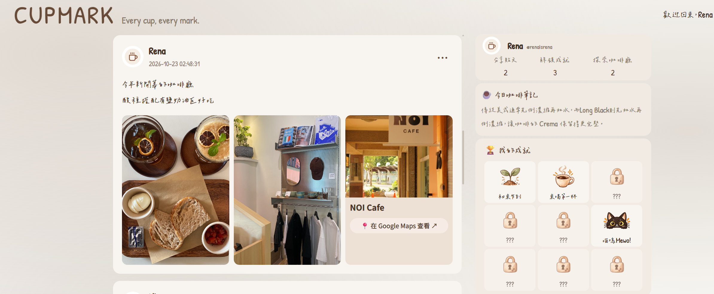

CHAPTER 01
ABOUT ME
HI！I'm YU XUAN。
今年剛滿23歲，老家來自嘉義東石鄉裡充滿漁情的純樸小村莊。
喜歡挑戰、創作，也喜歡學習新的事物，從社團、運動、財會工作到程式開發，每段經歷都是我的人生精彩片段。
比起待在舒適圈，我想我更喜歡親自嘗試、解決問題，看看自己潛能還能做到什麼。
這次我又準備展開新的冒險...歡迎點選左側選單，認識更多關於我的故事。
NEW QUEST UNLOCKED: UNKNOWN FUTURE
CHAPTER 02
LIFE QUESTS
我的人生特殊遊戲體驗。
♫ 我與舞台上的故事
在熱音社的日子從keyboard手到吉他手，還打過半年爵士鼓。
最後擔任社長帶著大家募款、環島，最後到育幼院捐款和義演。
誤打誤撞還參加了行進管樂，穿著足球隊服擔任指揮參加縣賽。
現在有一把吉他放在房間，沒事會翻翻以前的譜唱一唱！
⚑ 揮灑汗水與球的極限飆速
本來是跑馬拉松的人，不小心被被教練哄騙去踢了足球，
意外開啟了至今持續十一年的愛好運動！
從國中到大學，擔任校隊隊長也踢過大專男子冠軍賽，
學習團隊合作之外，更多的是訓練中熬來的毅力及耐力。
✿ 征服味蕾順便挑戰電費極限
17歲意外開啟了做甜點的興趣，而在18歲創立了網路甜點店。
除了常溫甜點禮盒、中秋月餅禮盒，最擅長的還是戚風蛋糕！
2022年的中秋節還跟咖啡廳請假...因為300盒的訂單烤了四天三夜...
CHAPTER 03
SKILL COLLECTION
人生技能持續蒐集中……
我的作品｜CUPMARK 咖啡廳分享網站
我的第一個全端開發作品，從介面設計、資料庫建置到網站部署，獨立完成咖啡廳分享平台。
包含會員登入、貼文管理、照片上傳、Google Maps 地點整合，以及趣味成就系統。

職位：會計經理
‧管理 19 間子公司帳務及財務報表，帶領5人團隊。
‧ERP與流程改善：優化營業稅申報流程，改善鼎新ERP稅務系統的銜接問題。
‧集團財務報表：編製集團合併報表及每月營收公告、每月集團經營分析簡報等
‧外部查核作業：非控制權益(NCI)、企業併購等相關底稿，配合會計師查核。
‧財務與資金管理：處理聯貸動撥、現金增資、股權異動及長期投資相關作業。
‧跨公司帳務整合：管理子公司月結、財務報表及 IFRS 相關帳務處理。
相關技能 ▶ [ERP系統] [合併報表] [審計底稿] [集團整合] [資金管理]
職位：會計副理
企業系統開發協作與財務流程改善，帶領財務團隊共8人。
一、ERP 系統維護與流程優化
‧與資訊工程師共同參與ERP進銷存系統維護、功能更新及異常排查。
‧參與進銷存資料重整，釐清帳務差異，將千萬元數值邏輯錯誤更正。
‧整合跨部門需求，釐清系統問題、驗證修正結果，提升正確性與作業效率。
二、系統開發協作與需求分析
‧參與蝦皮訂單自動對帳系統專案，負責需求分析、作業流程規劃、UI規劃及系統功能驗證，並銜接舊有財務系統正式上線使用。
‧從使用者角度分析帳務與金流對應關係，協助資訊工程師釐清系統處理邏輯。
‧系統測試及異常追蹤，協助將實際業務需求轉化為可執行的功能改善方向。
三、財務資料分析與團隊管理
‧進行大量交易資料核對、帳務差異分析及流程改善，提升財務資料處理效率。
‧負責總帳、成本控管、報表及結帳作業，協助IPO查核與IFRS會計準則處理。
‧擔任主辦會計，負責工作分配、帳務覆核及跨部門協調，確保作業順利執行。
相關技能 ▶ [ERP系統] [需求分析] [系統測試] [資料分析] [IPO作業] [報表分析]
職位：稅務及帳務專員
協助企業外帳記帳及稅務申報，在職期間擁有60間客戶。
‧專業稅務申報：處理多家客戶營業稅及營所稅申報，確保申報時效與正確性。
‧帳務流程改善：協助電商及中小企業客戶導入發票制度，調整帳務處理流程。
‧異常案件處理：處理發票漏報、進項異常及稅務調整案件，降低申報風險。
‧橫跨產業實務：熟悉營建、廢棄物處理及太陽能光電等產業帳務與稅務申報。
相關技能 ▶ [稅務申報] [客戶經營] [逃漏稅案件] [資料分析]
職位：總店店長及北高雄區域管理人員
負責創始店營運、團隊管理、顧客關係及品牌行銷，帶領 20 人以上團隊。
一、品牌經營與顧客關係
‧深耕熟客經營與顧客服務，建立長期客戶關係及良好商圈互動。
‧負責門市營運、人員培訓與團隊管理，維持服務品質及團隊凝聚力。
二、行銷企劃與社群經營
‧獨立發想行銷活動、設計宣傳文案及素材，拍攝短影音並經營社群平台。
‧主導創始店 10 週年慶企劃，創下活動期間業績突破 100 萬元的歷史紀錄。
三、店面改造與專案執行
‧主動向公司提案店面翻修，爭取改善老舊設備與顧客消費環境。
‧親自參與裝修規劃與工程進度管理，推動店面環境升級。
相關技能 ▶ [專案企劃] [社群行銷] [短影音製作] [顧客關係管理] [營運管理]
職位：內外場組長
負責精品咖啡廳內外場營運、餐點及飲品製作、顧客服務。
一、內場餐飲製作與品質管理
‧負責義大利麵、燉飯、沙拉及甜點等餐點製作，掌握出餐品質、擺盤呈現。
‧協調內場出餐順序與工作分配，確保尖峰時段餐點品質及出餐流程順暢。
二、精品咖啡與外場服務
‧學習單品咖啡沖煮、咖啡豆特性及風味辨識，累積精品咖啡專業知識。
‧負責咖啡與各式飲品製作、品質控管及顧客服務，維持高標準的餐飲體驗。
‧掌握服務節奏、座位安排及現場狀況，協調內外場作業並即時處理顧客需求。
三、現場管理與團隊協作
‧擔任內外場組長，協助人員工作分配、現場調度及新人指導。
‧在高客流與高服務標準的環境中，維持服務品質、團隊默契及營運效率。
相關技能 ▶ [精品咖啡沖煮] [咖啡風味辨識] [顧客服務] [團隊合作] [問題應變]